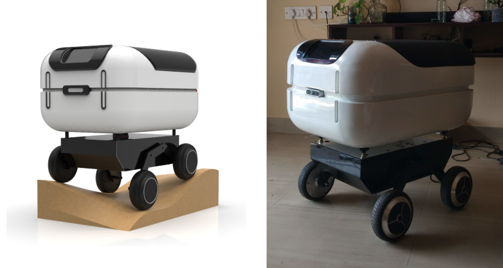

Nue: Last-mile Delivery Robot

Project Overview
Nue is a last-mile delivery robot prototype that underwent an extensive evolution from a minimal working ROS robot to a sophisticated autonomous delivery system. The development process showcased iterative design improvements, extensive testing, and integration of advanced robotics technologies for real-world delivery applications.
Development Evolution
Phase 1: Minimal Working Robot
The prototype started with creating a minimal working ROS robot, establishing the foundation for basic mobility and control systems.
Phase 2: Wooden Prototype
The design evolved into a wooden robot similar to TurtleBot2, incorporating improved structural elements and enhanced functionality for indoor navigation and testing.
Phase 3: High-Payload BLDC Integration
The next prototype focused on increasing payload capacity by integrating high-torque BLDC motors. A depth camera was added to experiment with outdoor navigation capabilities, significantly expanding the robot's operational envelope.
Phase 4: Rocker-Bogie Suspension
Having experimented with a rocker-bogie base for the Agrobot project, the team integrated the same suspension system within the base design. This implementation maintained good aesthetics while providing superior terrain adaptability inspired by Mars rover designs.
Phase 5: Sensor Integration & Testing
With the new base approaching the final product design, comprehensive testing was conducted with the complete sensor suite including LiDAR, Intel RealSense camera, IMU, and wheel odometry with EKF sensor fusion for robust localization.
Technical Implementation
- Custom rocker-bogie suspension system for terrain adaptability
- High-torque BLDC motors for increased payload capacity
- Multi-sensor fusion: LiDAR, Intel RealSense, IMU, wheel odometry
- Extended Kalman Filter (EKF) for robust state estimation
- RTAB-Map for simultaneous localization and mapping
- TEB (Timed Elastic Band) planner for dynamic path planning
- ROS-based architecture for modular development
Navigation & Autonomy
The robot underwent extensive parameter tuning to achieve reliable autonomous navigation. The implementation included RTAB-Map for real-time mapping and localization, combined with the TEB planner for smooth trajectory generation and dynamic obstacle avoidance. This combination enabled the robot to operate effectively in both indoor and outdoor environments.
RTAB-Map and TEB Planner Testing
First test with RTAB-Map and TEB planner after extensive parameter tuning sessions, demonstrating successful autonomous navigation capabilities.
Testing & Validation
Comprehensive testing phases included:
- Sensor fusion validation and calibration
- Autonomous navigation testing with RTAB-Map and TEB planner
- Real-world test drives in various environments
- Complete delivery demonstrations showcasing end-to-end functionality
- Performance comparison between CAD renders and physical implementation
Test Drive
Real-world testing demonstration showcasing the robot's autonomous navigation capabilities in outdoor environments.
Delivery Demonstration
Complete end-to-end delivery demonstration showcasing the robot's ability to autonomously navigate to destinations and complete delivery tasks.
Results & Achievements
The Nue delivery robot successfully demonstrated:
- Successful evolution from concept to functional prototype
- Robust autonomous navigation in diverse environments
- Effective payload delivery capabilities
- Integration of multiple sensor modalities for reliable operation
- Aesthetic design maintaining functional excellence
- Complete delivery workflow from pickup to drop-off